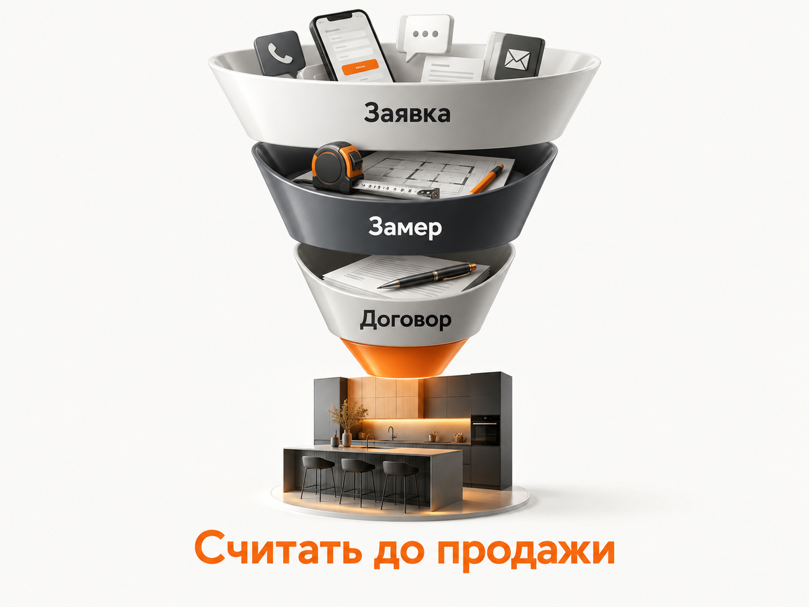

Блог о платном трафике
Продвижение кухонь на заказ в 2026 году: инструкция и прогноз
Кухни на заказ - одна из тех ниш, где реклама может приносить десятки и сотни заявок, но при этом экономика бизнеса легко перестаёт сходиться. Конкуренция высокая, чек большой, клиент долго выбирает, сравнивает несколько компаний, изучает реальные проекты и часто завершает сделку уже после замера или посещения салона.
Поэтому продвижение кухонь на заказ нельзя оценивать только по кликам или стоимости заявки. Нормальная воронка здесь выглядит примерно так:
реклама -> обращение -> квалифицированный лид -> замер или визит в салон -> проект и расчёт -> договор -> оплата
Именно стоимость клиента на последних этапах должна определять, сколько бизнес может платить за рекламу.
Яндекс в актуальном материале от 6 июля 2026 года отдельно отмечает длинный цикл сделки в нише кухонь, локальный характер спроса, необходимость показывать реальные проекты и разделять продвижение по сегментам. Для Поиска Яндекс прямо рекомендует работать с коммерческими запросами, а для компаний с шоурумами использовать также Карты.

Почему реклама кухонь на заказ сложная
Главная проблема не в том, что Яндекс Директ здесь «не работает». Проблема в количестве конкурентов, сложности продукта и большой разнице между обычной заявкой и человеком, который действительно готов заказать кухню.
Покупатель может искать кухню несколько недель. Сначала он смотрит идеи и материалы, потом пытается понять порядок цен, после этого сравнивает производителей, читает отзывы, отправляет несколько запросов на расчёт и только потом приглашает кого-то на замер.
При этом один производитель продаёт кухни условно за 150-200 тысяч рублей, другой работает со средним чеком 400-500 тысяч, а третий делает премиальные проекты. Показывать им одинаковую рекламу по одинаковым запросам бессмысленно.
Яндекс также разделяет рынок на эконом, средний и премиальный сегменты. Для среднего сегмента особенно важны реальные проекты, материалы, демонстрация производства, отзывы и удобная возможность отправить план помещения или фотографию. В премиуме значительно возрастает роль дизайнеров и архитекторов как отдельного канала продаж - это также отмечено в материале Яндекса.
Отсюда первое правило: сначала нужно определить, какую именно кухню и кому вы продаёте, а уже потом собирать рекламные кампании.
Примерный разброс стоимости заявок
По этой нише можно встретить очень низкую стоимость заявки, но относиться к таким цифрам нужно осторожно. В разных проектах под «лидом» могут понимать отправленную форму, звонок, запись на замер или уже подтверждённое обращение. Сравнивать эти показатели напрямую нельзя.
Данные 2026 года хорошо показывают реальный разброс.
| Проект | Результат | Что нужно учитывать |
|---|---|---|
| Кухни на заказ, февраль-июнь 2026 | После периода обучения средний CPA в мае-июне составил 980 ₽, конверсия из клика 5,2%. Ретаргетинг дал 720 ₽, поиск «кухни на заказ» - 940 ₽, РСЯ - 1 220 ₽. | Регион скрыт по NDA. До выхода на рабочий результат CPA снижался с 2 640 ₽ в феврале до 920 ₽ в июне. |
| Производитель кухонь, Москва и МО, 2026 | 2 819 обращений за 7 месяцев, стоимость обращения снижена с 5 535 до 2 979 ₽. Рекламный бюджет масштабирован с 800 тыс. до 1,5 млн ₽ в месяц. | Крупный бизнес с сильным брендом, развитым сайтом и многолетней историей. Копировать его показатели для небольшого салона нельзя. |
| Производитель кухонь, Москва и МО, март-май 2026 | 531 433 ₽ рекламных расходов, 98 обращений, 35 замеров и 43 оплаты. Расчётная стоимость одного обращения по опубликованным данным - около 5 423 ₽. | Основным драйвером стала товарная Мастер-кампания. В проекте использовалась аналитика до оплат, поэтому решение принималось не по CPL. |
Разброс в таблице получается примерно от 980 до 5 400 ₽ за обращение. Это не «средняя стоимость лида по рынку». Проекты различаются по региону, масштабу бизнеса, известности бренда, посадочным страницам, определению конверсии и стадии оптимизации рекламных кампаний.
В первой строке на старте цена конверсии составляла 2 640 ₽, а до 980 ₽ она снизилась только после нескольких месяцев накопления статистики и оптимизации рекламных кампаний.
Поэтому ожидать после запуска «лиды по 1 000 рублей с первой недели» я бы точно не закладывал в бизнес-план.

Какой CPL закладывать в прогноз
Для первоначального прогноза по кухне на заказ я бы использовал не одну цифру, а диапазон.
Для нового проекта без собственной статистики разумно проверить модель примерно от 2 000 до 5 500 ₽ за обычное обращение. Нижняя часть диапазона - хороший результат после нахождения рабочей связки. Верхняя - вполне возможный сценарий для дорогого региона, слабого сайта или первых этапов тестирования.
Для Москвы и Московской области я бы изначально готовился скорее к верхней половине диапазона. Для регионального производителя результат может оказаться заметно дешевле.
Это расчётный ориентир для теста, а не норматив рынка.
Например, при рекламном бюджете 150 000 ₽ в месяц модель может выглядеть так:
| Сценарий | CPL | Прогноз обращений | Если в продажу переходит 10% лидов | CAC |
|---|---|---|---|---|
| Сильный | 2 000 ₽ | около 75 | 7-8 продаж | около 20 000 ₽ |
| Рабочий | 3 500 ₽ | около 43 | около 4 продаж | около 35 000 ₽ |
| Осторожный | 5 500 ₽ | около 27 | 2-3 продажи | около 55 000 ₽ |
Конверсия 10% в этой таблице взята исключительно для примера расчёта. Это не «средняя конверсия кухни в продажу».
У одной компании лидом считается любая форма, у другой только человек с подходящим бюджетом, а у третьей рекламная цель уже является записью на замер. Поэтому универсального процента здесь нет.
Подробнее эту проблему я разбирал отдельно: как считать конверсию лида в продажу.
Сначала посчитайте допустимую стоимость клиента
Прежде чем запускать рекламу, я бы определил не желаемый CPL, а допустимый CAC - сколько бизнес может потратить на получение одного нового покупателя.
После этого стоимость лида считается обратно:
Допустимый CPL = допустимый CAC × конверсия лида в продажу.
Например, если бизнес может тратить на получение клиента 40 000 ₽, а из 10 нормальных обращений покупает один человек:
40 000 × 10% = 4 000 ₽.
Значит, лид по 3 000 ₽ может быть отличным результатом, а по 6 000 ₽ экономика уже потребует проверки.
Если другой производитель зарабатывает с одного заказа значительно больше и готов платить за клиента 100 000 ₽, даже CPL 6 000 ₽ может его полностью устраивать.
Именно поэтому я бы не ставил задачу директологу «нужны заявки максимум по 2 000 ₽», пока не рассчитана экономика сделки.
Для такого расчёта можно использовать мою отдельную модель прогноза бюджета Яндекс Директ.
Какой оффер использовать для кухонь на заказ
Фраза «качественные кухни на заказ по выгодным ценам» практически ничего не сообщает покупателю. Он видит похожие обещания у десятков компаний.
Предложение должно отвечать на конкретный вопрос человека на его текущем этапе выбора.
Если пользователь пока сравнивает варианты, ему может быть интересен предварительный расчёт по размерам или проекту. Если он уже готов двигаться дальше - замер, консультация дизайнера или посещение шоурума. Если главным барьером является непонятная стоимость - нужно объяснить, из чего складывается цена и что человек получает за свои деньги.
Сильнее всего работают реальные преимущества конкретного производства: сроки, собственное производство, определённые материалы, гарантия, монтаж, возможность изготовить сложную конструкцию, работа по дизайн-проекту, конкретная территория бесплатного замера.
Выдумывать «скидку 50% только до воскресенья», которая висит на сайте круглый год, я бы не стал. В дорогой покупке доверие обычно важнее агрессивной акции.
Каким должен быть сайт
В конкурентной нише сайт влияет на результат не меньше рекламных настроек.
Человек хочет быстро увидеть, делаете ли вы кухни его уровня, сколько примерно это стоит и можно ли вам доверять.
На странице должны быть реальные выполненные проекты, фотографии деталей и установки, понятное объяснение материалов и фурнитуры, информация о производстве, сроки, гарантии, отзывы и удобный способ получить расчёт.
Хорошо работает возможность отправить размеры, план квартиры, дизайн-проект или фотографию помещения. Яндекс тоже рекомендует для среднего сегмента показывать реальные проекты и производство, давать возможность загрузить проект и обеспечивать связь через мессенджер. Среди типичных ошибок Яндекс отдельно называет стоковые фотографии и попытку одним универсальным сайтом одновременно продавать кухни всем ценовым сегментам - подробнее в материале Яндекса.
Если компания продаёт совершенно разные продукты, например бюджетные кухни от 150 тысяч и дизайнерские проекты от миллиона, их лучше хотя бы логически разделять на сайте и в рекламе.
Как рекламировать кухни на заказ в Яндекс Директе
Я бы не собирал одну огромную кампанию «кухни» и не отправлял весь трафик на главную страницу.
Поиск
Поиск нужен в первую очередь для сформированного спроса. Здесь находятся люди, которые уже вводят запросы вроде «кухни на заказ», «заказать кухню по размерам», «кухонный гарнитур на заказ», «кухня под ключ», «рассчитать стоимость кухни».
Отдельно имеет смысл анализировать запросы по форме кухни, стилю, материалам, цене и географии.
При этом дробить небольшой региональный проект на двадцать кампаний тоже не нужно. Чем меньше объём конверсий, тем осторожнее я отношусь к лишней сегментации.
Главное разделять действительно разные намерения и регулярно смотреть реальные поисковые запросы. Запрос «кухня купить недорого» для производителя со средним чеком 500 тысяч рублей может оказаться бесполезным, хотя формально содержит идеальный ключ.
Яндекс в собственном материале по этой нише также называет несоответствие запроса ценовому сегменту одной из основных причин потери рекламного бюджета.
Подробнее о различиях каналов - в статье «Поиск или РСЯ в Яндекс Директ».
РСЯ и ретаргетинг
Для кухонь РСЯ особенно интересна из-за длинного цикла выбора.
Человек мог посмотреть несколько моделей, закрыть сайт, продолжить ремонт и вернуться к вопросу кухни через неделю. Здесь хорошо работает повторный контакт с реальными проектами, материалами и понятным предложением.
Креативы я бы строил прежде всего на настоящих кухнях клиента. Визуальная часть продукта очень сильная, поэтому использовать случайные стоковые изображения нет особого смысла.
В приведённых данных ретаргетинг оказался самым дешёвым направлением с CPA 720 ₽ против 940 ₽ у горячего поиска и 1 220 ₽ у РСЯ. Это один из примеров, но он хорошо показывает роль возврата аудитории в длинной воронке.
Мастер кампаний и автоматические форматы
Я бы обязательно тестировал Мастер кампаний отдельно от классического поиска.
Особенно интересна товарная Мастер-кампания, если на сайте есть структурированный каталог проектов или моделей и можно подготовить нормальный фид.
Товарная Мастер-кампания может стать основным драйвером масштабирования. Классический коммерческий поиск приносит обращения, но из-за высокой конкуренции его экономика может оказаться слабее.
Это не означает, что товарная кампания всегда победит поиск. Это отдельная гипотеза, которую стоит проверить на собственных данных.
Сам Мастер кампаний подробнее разобран в статье «Мастер кампаний в Яндекс Директ».
Какую стратегию выбрать
Если задача - заявки, я бы стремился оптимизировать рекламу по конверсиям, но только когда данных для этого достаточно.
Яндекс указывает минимум 10 конверсий в неделю для нормальной работы стратегии «Максимум конверсий» и рекомендует оценивать результат после 7-14 дней сбора статистики - подробнее в справке Яндекса о стратегии.
Из этого следует важный практический момент.
Если небольшой кухонный салон получает четыре продажи в месяц, обучать отдельную кампанию непосредственно на продажу будет сложно. Событие слишком редкое.
Тогда можно использовать более частый, но уже качественный этап воронки: подтверждённый лид, запись на замер или состоявшийся замер. По мере роста объёма данных цель можно переносить глубже.
По этой же причине я не стал бы искусственно создавать десятки маленьких кампаний. Каждой из них нужны данные.
Почему обычной заявки недостаточно
Одна из самых частых ошибок в кухнях выглядит так: рекламная кампания оптимизирована на отправку любой формы, а владельцу бизнеса нужны люди, которые готовы заказать кухню стоимостью несколько сотен тысяч рублей.
Алгоритм выполняет поставленную задачу. Если ему сказали искать дешёвые отправки формы, он будет искать дешёвые отправки формы.
Поэтому после первоначального запуска нужно связать рекламу с CRM.
Я бы фиксировал хотя бы следующие этапы:
обращение -> квалифицированный лид -> замер назначен -> замер состоялся -> договор -> оплата.
Яндекс позволяет передавать в Метрику офлайн-конверсии из CRM и использовать их для оптимизации Директа. Можно передавать ClientID, телефон или email, а в качестве целей использовать события вроде подтверждённой заявки, договора или оплаты.
Можно передавать не все формы и звонки, а только обращения, которые менеджер проверил и признал квалифицированными. Яндекс прямо описывает такую возможность для квалифицированных лидов.
Для кухонь это особенно полезно, потому что качество заявки может различаться кратно.
Подробнее - в статье о нецелевых лидах в Яндекс Директ.
Яндекс Карты
Если у компании есть салон или шоурум, Карты я бы рассматривал как отдельную обязательную точку контакта.
Покупатель кухни часто хочет увидеть материалы, фасады, фурнитуру и реальные образцы до подписания договора.
Яндекс также отдельно рекомендует продвижение в Картах компаниям с точками продаж и шоурумами, поскольку люди часто ищут кухонные салоны поблизости - это указано в материале Яндекса.
Здесь имеют значение фотографии, отзывы, рейтинг, актуальная информация, примеры работ и нормальное оформление карточки.
Авито
В кухнях на заказ Авито тоже стоит тестировать.
Причина простая: человек уже находится внутри площадки, где привык сравнивать много похожих предложений, цены, фотографии и отзывы.
Особенно интересен канал в регионах и в ситуации, когда поисковый аукцион Яндекса становится слишком дорогим.
Я бы не выбирал между Авито и Директом теоретически. Запускаются оба канала, одинаково считается стоимость квалифицированного обращения и клиента, после чего бюджет перераспределяется по фактической экономике.
Подробнее - в сравнении Авито и Яндекс Директа.
SEO для производителя кухонь
SEO здесь имеет смысл именно как долгосрочный канал.
Одна страница «Кухни на заказ» не сможет нормально закрыть весь спрос. Отдельно ищут угловые кухни, прямые кухни, кухни без верхних шкафов, определённые материалы, стили, планировки, сочетания цветов и кухни в конкретном городе.
Яндекс также рекомендует для SEO полноценную структуру сайта с отдельными страницами под типы кухонь, стили, материалы, информационные запросы и коммерческие запросы с географией - подробнее в материале Яндекса.
Для локального производителя такая структура одновременно решает две задачи: получает органический трафик и создаёт более релевантные посадочные страницы для рекламы.
Основные ошибки в продвижении кухонь
Я бы в первую очередь проверил четыре вещи.
Первая - оптимизация только по дешёвому CPL. Если один источник даёт лиды по 1 500 ₽, из которых почти никто не доходит до замера, а другой приводит обращения по 4 000 ₽, которые покупают, первый канал дешевле только в рекламном отчёте.
Вторая - попытка рекламировать все кухни одинаково. Эконом, средний сегмент и премиум требуют разных аргументов, сайта и рекламы.
Третья - отсутствие данных из отдела продаж. Без CRM реклама заканчивается на форме, хотя большая часть реальной воронки кухни происходит после неё.
Четвёртая - слишком быстрое отключение кампаний. Цена заявки может снижаться с 2 640 ₽ до 980 ₽ несколько месяцев. Это не означает, что любую плохую рекламу нужно терпеть месяцами, но оценивать новую автоматическую стратегию через три дня тоже неправильно.
Как я бы запускал продвижение кухни на заказ
Первый этап - расчёт экономики. Нужно определить средний чек, маржинальность, допустимую стоимость клиента и фактическую конверсию существующих лидов в продажи.
Второй этап - подготовка сайта. Реальные проекты, понятный ценовой сегмент, нормальная форма расчёта, доверие, отзывы, производство, сроки и понятный следующий шаг.
Третий этап - настройка Метрики, коллтрекинга и CRM. Ещё до запуска рекламы должно быть понятно, как отличить обычную заявку от квалифицированного лида и продажи.
Четвёртый этап - запуск нескольких крупных гипотез вместо десятков мелких кампаний. Я бы тестировал горячий поиск, автоматическую кампанию, РСЯ и ретаргетинг.
Пятый этап - оценка не только стоимости заявки. Через CRM нужно сравнивать стоимость квалифицированного лида, замера и продажи.
Шестой этап - масштабирование только тех связок, где выдерживается экономика. После этого уже имеет смысл расширять семантику, географию, ассортимент и подключать дополнительные каналы.
Сколько в итоге нужно денег на рекламу кухонь
Универсального бюджета нет.
Если бизнес способен получать обращение за 3 000 ₽, то бюджет 30 000 ₽ даст примерно десять лидов. Для серьёзных выводов этого мало, особенно если обращения ещё делятся между разными кампаниями.
При CPL около 3 000-4 000 ₽ бюджет порядка 150 000 ₽ даёт уже примерно 38-50 обращений в месяц. На таком объёме значительно проще оценивать качество источников и обучать стратегии.
Для Москвы и Московской области тест может потребовать заметно большего бюджета из-за конкуренции. После оптимизации рекламный бюджет может доходить до 1,5 млн ₽ в месяц при CPL 2 979 ₽.
Это не означает, что небольшому салону нужен миллион. Это показывает масштаб рынка и то, что успешную рекламу в кухнях можно увеличивать до значительных объёмов, если сходится экономика.
Главный вывод
Продвижение кухонь на заказ в 2026 году я бы строил не вокруг задачи «получить как можно более дешёвую заявку», а вокруг всей воронки до договора.
Яндекс Директ остаётся одним из основных каналов для сформированного спроса. Результат могут давать совершенно разные связки: поиск, РСЯ, ретаргетинг и автоматические товарные кампании.
Рабочая схема выглядит так:
сегмент и экономика -> сайт -> Яндекс Директ -> CRM -> квалификация -> замер -> договор -> обратная передача данных в рекламу.
А уже после этого имеет смысл масштабировать Директ, подключать Авито, Карты и системное SEO.
Я занимаюсь настройкой и ведением Яндекс Директа и работаю именно с такой логикой: реклама оценивается не по красивому CTR и не по количеству форм, а по качеству лидов и тому, что происходит с ними дальше.